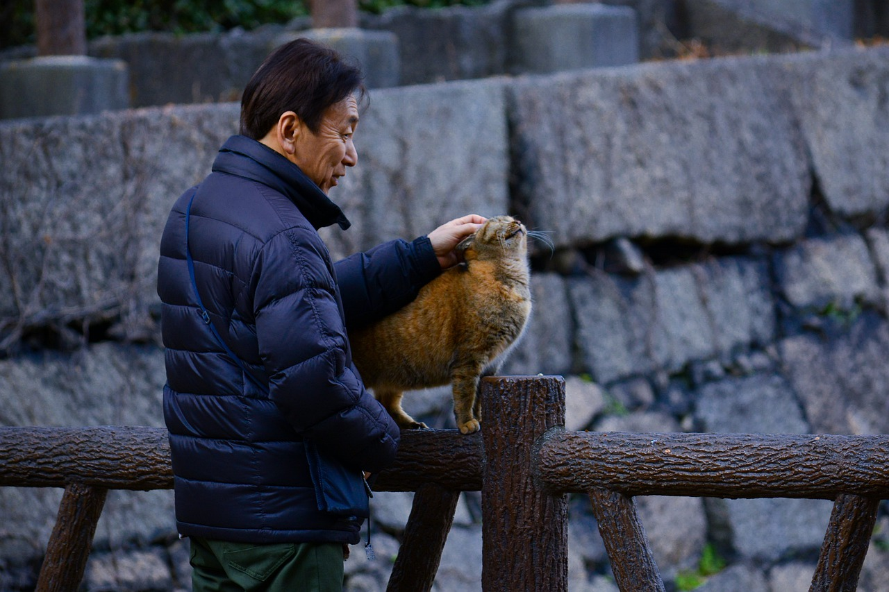
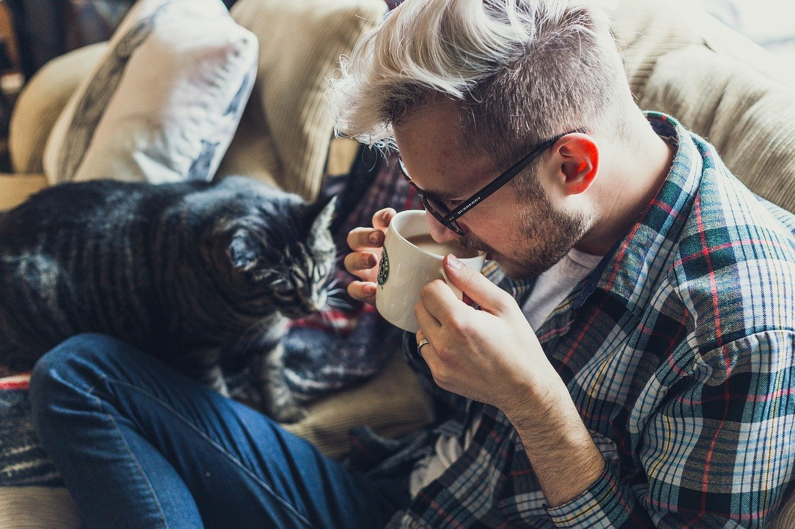

.png)
.jpg)
 Owner – Dr. Charles Lin (he/him)
Charles is the owner of Fluffy Friends Cat Daycare and lives with 34 former stray cats which he has rescued off the streets of Ottawa. Charles reads bedtime stories to his many cats every night in the hopes that they will fall asleep, they rarely do. He also enjoys cooking his cats fancy fish dinners. Charles is caretaker for both programs at Fluffy Friends as well as chef. Most days you will find him cooking and preparing delicious lunches for your cat to enjoy. Before opening Fluffy Friends Cat Daycare, Charles worked as a veterinarian with the Ottawa Cat Hospital. Your cats are in great hands with Charles.
Caretaker – Lillian Anwar (she/her)
Lilian is a self-taught carpenter and cat enthusiast. Lilian spends most of her free time building cat trees, many of which end up at Fluffy Friends Cat Daycare. At Fluffy Friends Lilian runs a Saturday cat tree building course and takes care of the cats in the adult cat program. She also designed and built our brand-new cat porch. Lillian has an orange and white tabby cat named Buttercup Sprinkles, Lillian enjoys eating cat food with Buttercup Sprinkles. Click here to see her guide to building cat trees.
 Caretaker – Alex Peacock (they/them)
Alex is the kitten caretaker at Fluffy Friends Cat Daycare. Alex is equally passionate about cats and dogs. They are a professional cat and dog trainer who employs the clicker training method to teach cats and dogs to play tiny musical instruments. Alex hopes to one day to conduct an animal orchestra and maybe even take the orchestra on a tour of the world. Alex has big dreams and an even bigger heart. You can often find them enjoying a cup of catnip tea with their adorable tabby cat named Teddy.